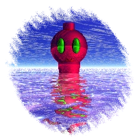
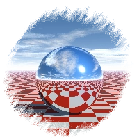

About Me
I'm Super Render 64 DD (formerly without the DD) and I like making renders in Bryce 3D. I made a book about Bryce a few years ago but it was a bit shit, so I remade it! Go check it out on this site's homepage.
I'm now moving on to animations to hopefully create something cool! In the meantime, I'll be updating this website with cool tidbits and timewasters to make it a sweet little place to relax.
I also love music, mainly funk (not that one, the other one) and soul. I may start putting my own music on here as well but right now I'm still making very beginner tracks, plus I want to get good before I share stuff with the world. I hope that didn't sound pretentious (it probably did).
If you wanna see my renders, right now they're only on Instagram but I'm planning on moving them here. Also if you have any inquiries or would like to give me feedback feel free to dm me on there.
Thanks for visiting!
I'm now moving on to animations to hopefully create something cool! In the meantime, I'll be updating this website with cool tidbits and timewasters to make it a sweet little place to relax.
I also love music, mainly funk (not that one, the other one) and soul. I may start putting my own music on here as well but right now I'm still making very beginner tracks, plus I want to get good before I share stuff with the world. I hope that didn't sound pretentious (it probably did).
If you wanna see my renders, right now they're only on Instagram but I'm planning on moving them here. Also if you have any inquiries or would like to give me feedback feel free to dm me on there.
Thanks for visiting!